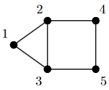
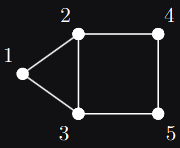

Max cut¶
Consider the following undirected graph with 5 nodes


The semidefinite approximation of the max cut problem [1] corresponding to this graph is
where
We show how we can solve this semidefinite program using QICS below.
import numpy as np
import qics
# Define objective function
C = numpy.array([
[ 2., -1., -1., 0., 0.],
[-1., 3., -1., -1., 0.],
[-1., -1., 3., 0., -1.],
[ 0., -1., 0., 2., -1.],
[ 0., 0., -1., -1., 2.]
])
c = -qics.vectorize.mat_to_vec(C)
# Build linear constraint
A = np.zeros((5, 25))
A[np.arange(5), np.arange(0, 25, 6)] = 1.
b = np.ones((5, 1))
# Define cones to optimize over
cones = [qics.cones.PosSemidefinite(5)]
# Initialize model and solver objects
model = qics.Model(c=c, A=A, b=b, cones=cones)
solver = qics.Solver(model, verbose=0)
# Solve problem
info = solver.solve()
X_opt = info["s_opt"][0][0]
print("Optimal matrix variable X is:")
print(X_opt)
print("which has rank:", np.linalg.matrix_rank(X_opt, tol=1e-6))
Optimal matrix variable X is:
[[ 1. -0.36684149 -0.3668415 0.12486877 0.12486877]
[-0.36684149 1. -0.73085463 -0.96880942 0.87719533]
[-0.3668415 -0.73085463 1. 0.87719533 -0.96880942]
[ 0.12486877 -0.96880942 0.87719533 1. -0.96881558]
[ 0.12486877 0.87719533 -0.96880942 -0.96881558 1. ]]
which has rank: 2
Complex max cut¶
In signal processing [2], the following complex variation of the semidefinite relaxation of max cut arises
where
for some complex matrix \(U \in \mathbb{C}^{n \times m}\) and real vector \(v \in \mathbb{R}^n\). We can solve this in QICS by making a few adjustments to the previous code.
import numpy as np
import qics
np.random.seed(1)
n = 5
m = 4
vn = qics.vectorize.vec_dim(n, iscomplex=True)
# Generate random linear objective function
U = np.random.randn(n, m) + np.random.randn(n, m)*1j
v = np.random.randn(n)
C = np.diag(v) @ (np.eye(n) - U @ U.conj().T) @ np.diag(v)
c = qics.vectorize.mat_to_vec(C)
# Build linear constraints Xii = 1 for all i
A = np.zeros((n, vn))
A[np.arange(n), np.arange(0, vn, 2 * n + 2)] = 1.
b = np.ones((n, 1))
# Define cones to optimize over
cones = [qics.cones.PosSemidefinite(n, iscomplex=True)]
# Initialize model and solver objects
model = qics.Model(c=c, A=A, b=b, cones=cones)
solver = qics.Solver(model)
# Solve problem
info = solver.solve()
X_opt = info["s_opt"][0][0]
print("Optimal matrix variable X is: ")
print(np.round(X_opt, 3))
print("which has rank:", np.linalg.matrix_rank(X_opt, tol=1e-6))
Optimal matrix variable X is:
[[ 1. +0.j 0.209-0.978j 0.67 -0.743j -0.584+0.812j 0.866-0.499j]
[ 0.209+0.978j 1. +0.j 0.866+0.499j -0.916-0.401j 0.67 +0.743j]
[ 0.67 +0.743j 0.866-0.499j 1. +0.j -0.994+0.11j 0.951+0.309j]
[-0.584-0.812j -0.916+0.401j -0.994-0.11j 1. +0.j -0.911-0.412j]
[ 0.866+0.499j 0.67 -0.743j 0.951-0.309j -0.911+0.412j 1. +0.j ]]
which has rank: 1
References¶
“Improved approximation algorithms for maximum cut and satisfiability problems using semidefinite programming,” M. X. Goemans, and D. P. Williamson, Journal of the ACM (JACM) 42.6 (1995): 1115-1145.
“Phase recovery, maxcut and complex semidefinite programming”, I. Waldspurger, A. d’Aspremont, and S. Mallat. Mathematical Programming, pp. 1-35, 2012.